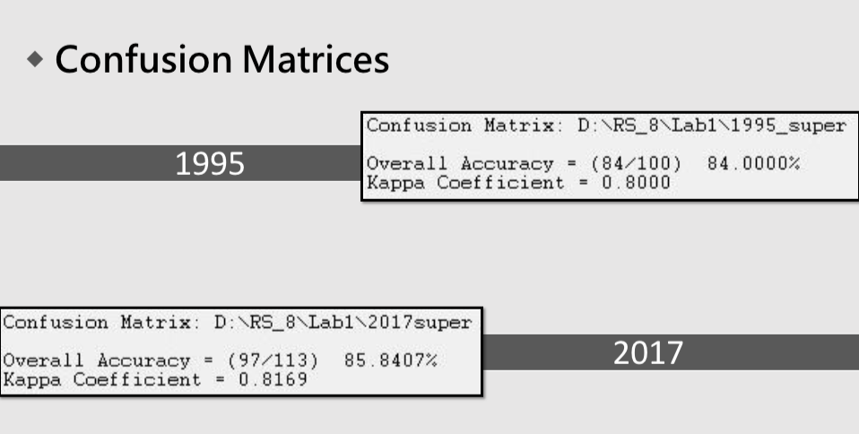

2017-1 Remote Sensing and Lab. : Statellite image inditification
co-author: 饒孝天、林芳偉
藍色是水體，綠色是 森林，黃色是草地， 灰色是土壤，黑色是 建築物。 - 我們使用envi這個遙 測影像處理軟體，然 後經過實際打點，做 監督式分析，再給予 顏色，得出這張圖。
我們的錯誤矩陣先呈現總體指標，我們1995年的整體準確率為84%， kappa值為0.8，而2017年的整體準確率與kappa值都略高於1995年的，分 別為85.5%與0.8。接著我們看詳細的錯誤矩陣。 我們可以看到1995年的錯誤矩陣，因為在20多年間地表有許多的改變， 因此原本的裸露地變成建築物也是可以理解的。再來看2017年的表格， 我們誤差比較大的是把一些建物打成森林，可能我們挑的森林不夠大片， 像我挑了法學院 和 醉月湖旁的森林，可能在衛星影像上是建築物，所以 產生了錯誤矩陣上的數字。
我們針對五項一一來看。首先看到建物，建物 只有三成的更動，大部分還是維持建物。再來 看到森林，森林也大致維持森林，有一成的森 林變成了建物。第三個看到草地，草地變化率 高達75%以上，大部分變成森林，其次變成建 物。第四個看到土壤裸露地，變化率更高達90 %以上，是所有當中最高的，大部分的裸露地 都變成建物。最後看到水體，水體只有15%的 變化率，少部分變成建物。
案例部分
政府在1993年淡水港第一期工程開工，於民國87年(1998 底完工，所以我們看到1995年的衛星影像圖台北港式還沒 建成的模樣，只有雛型。1999年時，推動第二期工程，而 水港更名為「臺北港」。 在2005年5月25日，臺北籌設自 貿易港區，申請設置範圍為79公頃土地(包括散雜貨儲運 心與油品儲運中心)，以經營業務型態以物流產業為主。 這個計畫在四年後的2009年臺北港貨櫃儲運中心開始營運 所以我們可以看到影像當中黃色的草地轉為黑色的建物， 能就是這些儲運中心的建築物。現在的台北港是2012開始 第三期工程進行中(正在興建三座碼頭)。
Complete file Download
2017-1 Remote Sensing and Lab. : Statellite image inditification